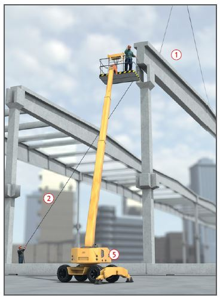
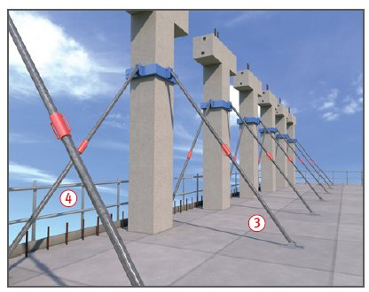
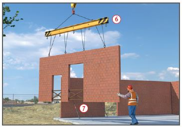

Fertigteile aus Beton und Mauerwerk
|
|

Gefährdungen
- Bei Montagearbeiten von hochgelegenen Arbeitsplätzen aus, kann es durch fehlende Sicherungsmaßnahmen zu Absturzunfällen kommen.
- Bei unsachgemäßer Montage oder Lagerung können Personen durch umstürzende oder kippende Teile verletzt werden.
Schutzmaßnahmen
Lastaufnahmeeinrichtungen
- Nur auf das Fertigteil abgestimmte Transportankersysteme, Lastaufnahmemittel und Anschlagmittel verwenden
 .
.
- Bei Transportankersystemen Verwendungsanleitung des Herstellers beachten. Die Tragfähigkeit muss nachgewiesen sein.
Lagerung
- Fertigteile nur auf ebenen und tragfähigen Lagerplätzen kipp- und rutschsicher absetzen.
- Sicherheitsabstand von mindestens 0,50 m zu beweglichen Teilen, z. B. zu Kranen, einhalten.
Montage
- An der Baustelle muss eine Montageanweisung vorliegen.
- Fertigteile möglichst nicht über Personen schwenken.
- Hebezeuge mit geringer Hub- und Senkgeschwindigkeit verwenden.
- Sicherheitsabstände zu elektrischen Freileitungen einhalten.
- Großflächige bzw. lange Fertigteile mit Leitseilen führen
 .
.
- Fertigteile vor dem Lösen der Lastaufnahmemittel so sichern, dass sie nicht umkippen, abstürzen oder sonst ihre Lage verändern können. Wechselnde Stabilitätsbedingungen berücksichtigen.
- Anzahl der erforderlichen Montagestreben statisch nachweisen. Mindestens 2 Streben je Fertigteil anbringen
 .
.
- Neigung der Montagestreben zwischen 30° und 60°.
- Nicht an übereinander liegenden Stellen gleichzeitig arbeiten. Gefahrbereiche unterhalb der Montagestelle absperren und kennzeichnen.
- Werkzeuge und Kleinmaterial in Behältern mitführen.
- Witterungsverh‰ltnisse (z. B. Wind, Gewitter) beachten, um die sichere Montage zu gew‰hrleisten.
Absturzsicherung
- Absturzsicherungen, z. B. Seitenschutz
 , nach Gefährdungsbeurteilung ermitteln und vor der Montage anbringen.
, nach Gefährdungsbeurteilung ermitteln und vor der Montage anbringen.
- Auf Seitenschutz bzw. Absperrungen kann nur verzichtet werden, wenn sie aus arbeitstechnischen Gründen nicht möglich und stattdessen Auffangeinrichtungen (Fanggerüste/Dachfanggerüste/Auffangnetze) vorhanden sind. Nur wenn auch Auffangeinrichtungen unzweckmäßig sind, darf persönliche Schutzausrüstung gegen Absturz (PSAgA) verwendet werden.
- PSA gegen Absturz nur an geeigneten Anschlageinrichtungen befestigen.
Anschlagmöglichkeiten an Teilen baulicher Anlagen können zur Befestigung genutzt werden, wenn deren Tragkraft für eine Person mit einer Fangstoßkraft von 9 kN einschließlich den für die Rettung anzusetzenden Lasten nachgewiesen ist.
- Der Unternehmer oder ein fachlich geeigneter Vorgesetzter hat die Anschlageinrichtungen festzulegen und dafür zu sorgen, dass die PSA gegen Absturz benutzt wird.
- Maflnahmen zur Rettung festlegen.
- Besch‰ftigte mit praktischen ‹bungen in die Verwendung von PSA gegen Absturz unterweisen.


Arbeitsplätze und Verkehrswege
- Zum Festlegen von Bauteilen oder Lösen von Anschlagmitteln möglichst Hubarbeitsbühnen
 verwenden.
verwenden.
Deckenplatten aus Beton
- Hartschaumverfüllte Aussparungen in Deckenplatten beim Verlegen öffnen sowie durchtrittsicher und unverschieblich abdecken.
Fertigteile aus Mauerwerk
- Bei mehr als zwei Aufhängepunkten Ausgleichstraverse
 verwenden.
verwenden.
- Fertigteile nur in Einbaulage zwischenlagern, eine Teilauflagerung der Fertigteile vermeiden.
- Mauerwerksöffnungen (z. B. Tür- und Fensteröffnungen) besonders sichern
 .
.
Arbeitsmedizinische Vorsorge
- Arbeitsmedizinische Vorsorge nach Ergebnis der Gefährdungsbeurteilung veranlassen (Pflichtvorsorge) oder anbieten (Angebotsvorsorge). Hierzu Beratung durch den Betriebsarzt.
07/2021